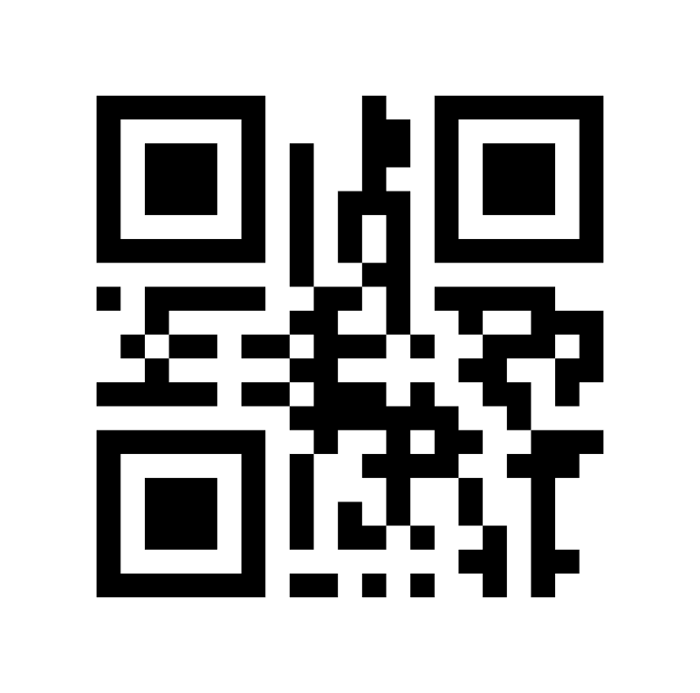

09:41
Lily’s Hub Staff Terminal
LIVECounter Desk #01
Filter Categories
Frame 111
Complete Parcel Information
Active
Staff QR Scanner

Camera Viewfinder
Align QR code within frame
Enter internal Order ID to locate parcel (e.g. ORD - 408):